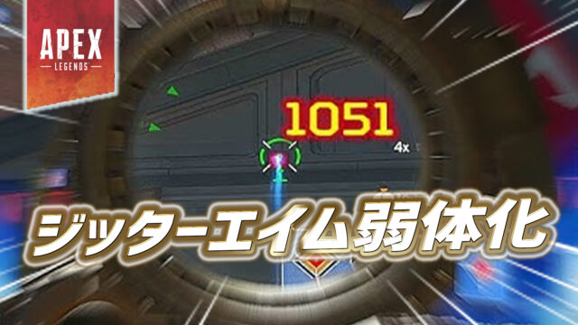
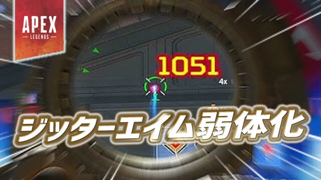

ジッターエイムとは？使い方と効果を解説
投稿日：2025年6月11日
「ジッターエイム」とは、マウスやスティックを小刻みに震わせることで、リコイルを抑えながら弾を集中させる高等テクニックです。
主に近〜中距離のフラットラインやハボックなどに有効で、上級者プレイヤーがよく使用しています。PCでもパッドでも使える方法は異なりますが、慣れれば非常に強力な手段になります。
使用には練習が必要ですが、撃ち合いでの勝率を大きく引き上げられるテクニックの1つとして注目されています。
投稿日：2025年6月11日
「ジッターエイム」とは、マウスやスティックを小刻みに震わせることで、リコイルを抑えながら弾を集中させる高等テクニックです。
主に近〜中距離のフラットラインやハボックなどに有効で、上級者プレイヤーがよく使用しています。PCでもパッドでも使える方法は異なりますが、慣れれば非常に強力な手段になります。
使用には練習が必要ですが、撃ち合いでの勝率を大きく引き上げられるテクニックの1つとして注目されています。